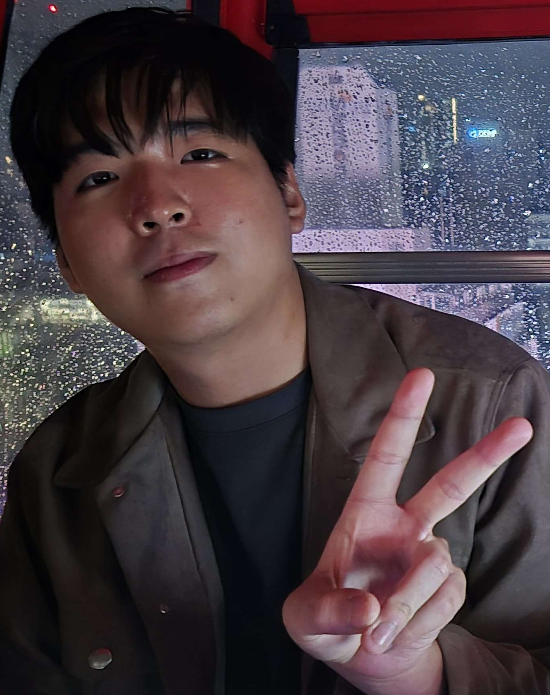
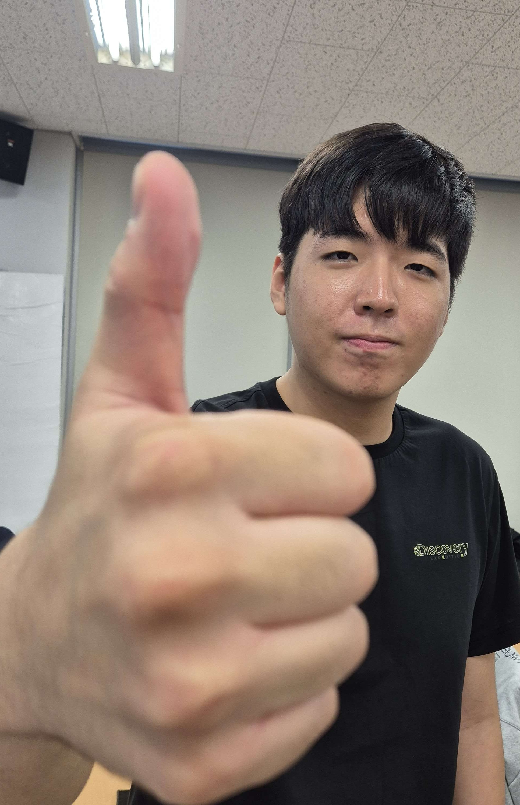

Game Programmer/Engine & System Developer

I deeply understand and actively utilize modern programming paradigms, including Modern C++ and meta-programming. Beyond simply using syntax, I have a thorough understanding of the entire pipeline where code is transformed into binaries through the compiler and linker. With a low-level perspective that functions and parameters are ultimately data collections in memory, I am highly proficient in hardware-friendly architecture design and performance optimization based on the practical inner workings of C++.
Based on a deep understanding of the graphics rendering pipeline, I developed a custom game engine using OpenGL and shader programming (GLSL). By directly implementing and integrating advanced rendering techniques step-by-step into the pipeline—from anti-aliasing like MSAA to post-processing effects that elevate visual quality—I have built a solid understanding of internal engine architecture and overall engine development.
To find and fix various logic, memory, and potential hidden errors encountered during game development, I developed and integrated a custom debugging system directly into my projects. This experience allowed me to proactively detect and resolve various issues, ensuring software stability.
Student Game Programmer Sangyun Lee
I am never satisfied with merely writing code that works; I am always driven to dig deeper and understand exactly what is happening under the hood. I have a strong passion for optimizing rendering pipelines and designing robust architectures to ensure smooth gameplay experiences. As a programmer, I constantly challenge myself to push the limits and achieve better performance.
Since childhood, my passion for gaming has always been accompanied by a deep analytical curiosity. Experiencing well-crafted games fascinated me—particularly how they intuitively guide players without restricting their freedom, and how physics and mechanics combine to create maximum enjoyment. This fascination naturally evolved into a desire to build these worlds myself; I wanted to step beyond being just a player and dive into the art and technical challenges of game development from a creator's perspective.

A selection of my range of projects
Engine Programmer, Custom Game Engine 2025 Developed a custom game engine from scratch using OpenGL 4.6 and GLSL shader programming, implementing a full rendering pipeline with advanced visual techniques. Integrated rendering features including MSAA anti-aliasing and post-processing effects such as Fog, Toon Shading, Shadow Mapping, and gradient-based techniques to improve visual fidelity. Designed hardware-friendly architecture with a low-level understanding of the C++ compiler and linker pipeline, achieving performance optimization through cache-efficient data layouts. Built and integrated a custom debugging system to proactively detect and resolve logic, memory, and hidden runtime errors, ensuring software stability throughout development.
Game Programmer / QA, Dragonic Tactics Present Collaborated with a team of 4 to develop a game, contributing as both a programmer and QA member across multiple systems. Designed and implemented core game systems including Combat, Spell, and AI systems, improving overall gameplay functionality and stability. Developed a Debug Manager, an in-game tool that streamlined the debugging process for the entire team by centralizing runtime diagnostics and error reporting. Performed QA testing to identify and triage bugs, working closely with teammates to ensure consistent software quality.
B.S. in Computer Science GPA: 3.8 / 4.5 Keimyung University, Digipen institute of technology | Daegu, Korea & Redmond, WA, USA Relevant Courses: Computer Graphics, Linear Algebra, Data Structures & Algorithms, Operating Systems